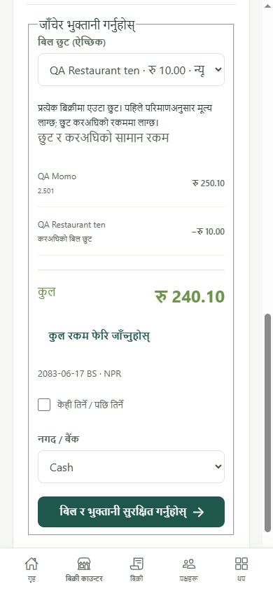
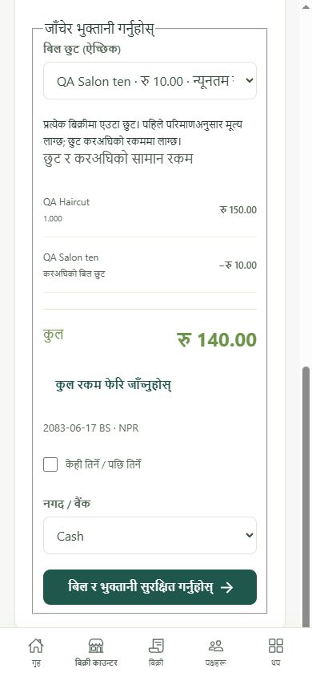

1. Sign up, verify and sign in
The sign-in screen has two modes: Welcome back for existing users and Let’s get started for new accounts. New accounts start a 14-day trial.
Create an account
Sign-in screen → Let’s get started
- Enter Your name, choose a Country (Nepal, +977, is selected first), then enter your Phone number. Enter the number without the country code, for example 9801234567. Nepali digits are accepted.
- Enter your Email, a Password and Confirm password.
- Submit, then open the verification link in your email. The link expires.
Verify your email before opening a business. Phone collection does not verify phone ownership. Never share password-reset links or verification codes.
Sign in again and manage your account
Sign-in screen → Welcome back; then More → Account, or the account page
- Sign in with your email and password.
- My account shows Update details and Change password (Current password, New password, Confirm new password).
- Sign out is the round avatar button at the top right. The app first checks for an unsaved entry and asks before signing out.
2. Your businesses and switching
Choose your business screen (after sign-in), or the business switcher in the side menu
- Each business is a separate book with its own items, parties, stock, cash accounts and staff. Tap a business to open its books.
- Previous businesses and Next businesses show the rest of your list.
- New business opens setup: Business name, Address, Business type and Billing account, then Create business. Your account must have an active package to add more businesses.
- To join a business someone else runs, open the invitation link while signed in. Your verified email must match the invitation.
- To switch, use the business selector at the top of the side menu. If an entry is still open, the app asks before leaving it.
Membership in one business does not give access to another. A branch is a business too; it needs its own staff membership.
3. Business settings
Settings (side menu, or More → Business tools)
Settings has tabs. Owners see Business, Staff, Cash & bank and Expense categories. Owners and other roles see Lock period and Owner money history as their role allows. The top of the page also links to Starting balances and, for owners and accountants, Audit history.
Business
- Business name, Address, Phone and PAN.
- Business language: the default language of the books.
- Default tax rate (%): used only where tax is recorded. Enable tax only after checking your business’s requirements; see Availability and limits.
- Choose Update business to save.
Cash & bank
- Choose Add cash / bank account, enter an Account name and a Kind (cash or bank).
- Every sale, purchase and payment chooses one of these accounts. Balances are shown on Home.
Expense categories
- Add a category with Category name. Expenses and regular bills use these categories in their reports.
4. Starting balances
Starting balances (Settings → Starting balances, or the Home banner until finished)
Starting balances record where the business stands on the first day of these books. They are entered once. Owners and accountants can open this screen; other roles see a notice.
- Cash & bank: set the Starting date (BS), then enter the balance of each cash and bank account (NPR), labelled Cash & bank you have now.
- Items in stock: for each stock item enter the Quantity and the Total starting value (NPR). Enter your cost, not the selling price.
- Party dues: for each party choose Who owes whom? and enter the Amount (NPR). Use this for money customers owe you and money you owe suppliers.
- Review your starting point, then choose Confirm starting balances.
Starting balances do not record a new customer sale or supplier payment. They set the opening position only. After confirmation the balances are fixed, and later changes go through sales, purchases, payments and stock counts.
A genuinely new business with no opening cash, stock or dues can confirm empty balances. Leave a section empty only if the amount is truly zero.
5. Staff, roles and branches
Settings → Staff; More → Business tools → Branches (owner only)
Invite staff
- Settings → Staff → Invite staff. Enter the person’s Email and choose a Role.
- They sign up or sign in with that same email and open the invitation. Their verified email must match.
- The invitation stays under Invitations until accepted or revoked.
Roles: owner, manager, accountant and cashier. See Who can do what.
Change a role or remove access
- Open the member under Access for and change the Staff role.
- Saving a role change asks you to Confirm your password.
- Remove access as soon as someone leaves. Keep staff accounts individual; do not share logins.
Branches
- The owner of a main business can add a branch from POS setup → Add branch (Branch name, then Create branch). The business type can differ per branch.
- Each branch has its own opening setup, items, stock, cash accounts, staff and books.
- Parent membership gives no access to a branch. Use the business switcher before entering anything, and check the branch name at the top of the screen.
- Branches do not share stock or transfer goods between each other in this release.
6. Home screen
Side menu → Home (the first screen after you open a business)
Home shows the business for today. Use the four tabs (Daily actions, Balances, Recent activity, Low stock) to switch view. Cashiers do not see Balances.
- Daily actions has quick buttons: New sale, New purchase, Receive money and Pay party. Record expense sits below them. Cashiers see only New sale.
- Balances shows four figures: Today’s sales (after returns, before tax), Cash & bank, Customers owe (still to collect) and Still to pay (supplier bills outstanding).
- Recent activity lists the latest bills, two at a time with Previous and Next. See all opens the sales list.
- Low stock lists items at or below their alert quantity. Each row shows the quantity and unit. If there is none, the screen says No stock alerts.
Negative stock. The app allows a sale of more than is in stock. The item then shows a negative quantity and Home lists it under Negative stock, with shortcuts to Record purchase and Count stock. The shortfall is costed at the current average (or the last purchase price when stock was zero). When the purchase arrives, any price difference for the units already sold moves to cost of goods sold automatically.
If the Starting balances link shows, the opening balances are not finished yet. Finish them before relying on the figures on Home.
7. More menu
Side menu → More (phones: bottom navigation → More / थप)
More groups every tool by what you are doing. Your role decides which groups you see; cashiers see the sales tools. The user manual opens from Help at the top of every screen.
- Sales tools: POS, Basket offers, Price lists, Quotes / orders / jobs. Gym desk appears for gyms.
- Money tools: Collections / payments, Follow-ups, Purchases, Expenses, Regular payments, Money.
- Stock tools: Reorder stock, Import CSV, Count stock (owner and manager).
- Business tools: Reports, Settings.
- Account: Notifications, AI agents, Packages, Switch business.
8. Entry basics: money, quantity and dates
- Money is NPR. Enter rupees, for example 150.50. The app keeps paisa exactly.
- Quantity allows three decimal places, for example 2.501 kg.
- Dates are BS (Bikram Sambat). Use the displayed BS date or its picker, not an AD date. Appointment times use Nepal time.
- Language: the button at the top right switches English and नेपाली. Some Nepali labels are still being completed; English always works.
- Online or offline: a banner shows when you are Offline. Financial entries need a connection.
Working on a phone. Bottom navigation keeps Home, POS, Sales, Parties and More within reach. Long entries are split into steps, and the Back arrow at the top left returns to the previous step or screen. Optional fields sit under an expandable section.
Each entry follows the same pattern: choose the party or account, enter items or the amount, review the total, then save once and wait for the saved record. A confirmed save shows the saved bill or payment.
9. Parties: customers, suppliers, employees
Side menu → Parties (Contacts)
A party is one person or business. One party can hold several roles, so a customer who also supplies you has one record with two roles. Avoid creating a duplicate for each role.
Add or edit a party
- Parties → Add party.
- Enter a Name and an optional Phone (optional).
- Under Party roles, tick every role that applies: Customer, Supplier, Employee and Rent. Choose at least one role.
- Contact details (optional) holds Address (optional), Email (optional) and PAN (optional).
- Save. When editing, Balances / actions shows the balance, payment terms, follow-ups and View statement.
Archiving keeps old records for history, but the party is no longer offered for new entries. Use payment terms and agreed prices for credit limits and party-specific prices.
10. Party payment terms and agreed prices
Parties → open a party → Balances / actions → Payment terms / prices
- Customer credit limit (NPR): the most a customer may owe you. A sale that pushes unpaid balances above the limit is refused. Fully paid sales and returns remain allowed.
- Customer payment days and Supplier payment days set the default due date (BS) for new bills. A blank Due date (BS) on a bill uses these days.
- Agreed item prices: for one item, enter Agreed price (NPR) and choose Save price. Bills for this party then use that price. Use this price applies it to a line.
- Choose Save payment terms to save the limit and days.
- Cashiers see sale-price suggestions only. Credit limits and purchase prices are not shown to them.
An agreed party price takes priority over price lists. A saved bill and an accepted quote keep the prices they were created with.
11. Items and measurements
Side menu → Items; Items → Add product
- Enter the Name and choose the Item type: a Stock item for goods you buy and sell, or a Service for labour and appointments.
- Choose the Item category and an optional SKU (optional). Set the Selling price and the Unit.
- Under Product options set the Billed base unit, the entry methods (Enabled entry methods), custom units (Add custom unit, with Custom unit name and Quantity in base units) and Service duration (minutes) for appointment services.
- Under Stock details (optional) and Reorder settings set Low stock alert quantity, Target stock quantity and Preferred supplier.
- Save. Test a small sale in POS before relying on the unit.
Entry methods include quantity, amount, pack, length, area and volume where they suit the item’s base unit. Base-unit groups:
- Count: piece/unit, pair, dozen.
- Weight: kg, g, mg, metric tonne, pound and ounce.
- Liquid: litre, millilitre, centilitre, US gallon and Imperial gallon. The two gallons differ; choose the one you trade in.
- Length: mm, cm, metre, inch, foot and yard.
- Area: square mm, cm, metre, inch, foot and yard.
- Volume: cubic mm, cm, metre, inch, foot, yard and board foot.
Glass area uses length × width × pieces. Timber volume adds thickness. A board foot is 1 square foot × 1 inch thick. Each dimension has its own unit, and metric and inch measures can be mixed.
For a bottle, tray, sheet, bundle or local measure, use Add custom unit and state exactly how many base units it holds. The app does not guess local conversions.
Converted quantities round once to 0.001 base unit. A conversion that rounds to zero is rejected. Changing only the displayed unit name does not convert stock or prices. Base-unit changes are blocked once stock has moved, so plan the unit before receiving stock.
12. Quick POS
Side menu → Quick POS (phones: bottom navigation → POS). Heading reads “Quick POS · your business type”.
Quick POS is the counter that works on phones and small screens. Its layout follows your business type (general, meat, restaurant, barber, salon, milk, glass or wood). It refreshes every 2 seconds while open, so kitchen tickets and appointment changes appear without reloading.
Make a sale
- Search / barcode: type a name or exact SKU, or scan a configured barcode. Tap the item.
- Enter a quantity or measurement. Choose Add to cart. Weighed and measured items open the entry boxes for their unit.
- Open Cart. Check quantities, measurements and Items before offer and tax. Use Remove to delete a line.
- Optional: pick a basket offer from the offer selector if one applies. The counter shows the offer name, the discount and the final total.
- Choose Review & pay. Check the total. If it changed, choose Check total again.
- Enter Paid now and choose the Payment account. Choose Save bill + payment.
Choose a Customer (optional) to use agreed prices or to leave a balance due. Tick Link customer for pay later for a credit sale. An unpaid sale needs a named customer.
Modes by business type
- Restaurant: Order tickets, Table / takeaway, Open order; see Waiter and kitchen.
- Barber and salon: Book appointment; see Appointments.
- Gym: Member check-in; see Gym desk.
- Job businesses: Job cards and ready jobs; see Job cards.
If the reply to Save bill + payment is lost, the screen locks and offers Retry original action. Use it; do not start a second bill. See Connection problems and retries.
13. POS setup: screens, tables, staff and chairs
Side menu → POS → POS setup (heading “POS setup”)
- Business type / POS screen: choose the counter layout. This changes the screen only; your books stay the same.
- Tables / staff / chairs: add restaurant tables, takeaway, staff and chairs for appointments. Set their working hours.
- Item measurement setup and Measurements and service duration: enable the entry methods an item needs and set Duration (minutes) for appointment services.
- Product codes / scale setup: opens alternate codes and scale formats.
- Save screen stores the settings for this branch.
Add products before selling. Each branch has its own POS setup.
14. Waiter and kitchen
- Manager or owner: add tables, takeaway and menu items in POS setup.
- Waiter: open a New order for a table or takeaway. Enter a useful guest name or reference (Guest name (optional)), add items, then Send to kitchen.
- Kitchen: each new round appears as a ticket. Move each through the preparation states.
- Waiter: Mark served when food is served. Cancel ticket removes a ticket that is no longer needed.
- Cashier: when every active ticket is served, open the bill (Open bill), choose any offer, review the total and save with Save bill + payment.
Sending tickets does not create the financial bill. Prices saved on a ticket stay with that order. Checkout rechecks current offer terms. Use New kitchen round for extra items on an open table; Cancel open order cancels the whole order.
Waiter and kitchen screens refresh about every two seconds while open. If the connection drops, updates may lag; reconnect and check the ticket status again before serving.

15. Salon and barber appointments
Quick POS → Appointments (or Full POS → Appointments)
- Add staff or chairs, their hours and each service’s price and Duration (minutes) in POS setup.
- Choose Book appointment. Enter the Client name, optional Phone (optional), the service, Staff / chair, the Day (BS) and the Start time (Nepal).
- Save appointment. The app rejects a slot that overlaps another booking or a Blocked time. Use Block personal / unavailable time to keep a slot free.
- On arrival choose Mark arrived, then Start service. A client who does not come can be marked No show.
- At checkout choose any offer, check the total and save the bill and payment. A successful checkout completes the appointment.
To change a booking, use Reschedule and Save new time rather than creating a duplicate. Saved booking prices stay fixed; offers at checkout use current availability. The bill follows the booked BS day.

16. Full POS (tablet and desktop)
Side menu → Full POS (shows on tablets and computers). Phones show a link back to Quick POS.
Full POS is a full-screen counter with no side menu and no scrolling: one tap per product. It has its own Help button at the top right, and Quick POS and Exit links.
- Sell: search, or pick a category and tap a product tile (tap again to add one more). Scan a barcode to add it. Weighed or measured items open a small entry box. Use ‹ Previous and Next › to page through products.
- Ticket: + and − change quantity; tap a line to change its measurement with Update line. Choose a Customer for agreed prices or a balance due. Remove the customer with Remove customer.
- Pay: choose Cash or a bank account, enter Amount received (NPR) with the keypad or a quick note (500, 1000…). The Change is shown. Less than the total saves Still due for the chosen customer (Save with balance due); a walk-in customer must pay in full. Complete sale saves. Then View / print bill.
- Park / Recall: Park a ticket to serve the next customer; Recall it from Parked tickets later. Parked tickets stay on this device only.
Extra modes appear by business type under POS modes:
- Sale: the default counter.
- Open tables (restaurant): running totals and checkout. Take orders in Quick POS.
- Appointments (barber, salon): today’s bookings. Arrived clients can be checked out.
- Member check-in (gym): find a member by Find member by name, phone or code.
- Ready jobs (job businesses): deliver and bill a job at its agreed total.
Full POS needs a tablet or desktop-sized screen. The server checks the total before payment.
17. Gym desk
Side menu → Gym desk (gym businesses only). Tabs: Today, Members, Plans.
- Set up a plan (owner or manager): first create a service item such as “Membership fee”. On Plans, choose New plan. Enter the Plan name, Choose service item, Fee (NPR), Days, an optional Visit limit (empty = unlimited) and whether it Includes classes. Choose Save plan. Changing a fee applies to new joins and renewals only.
- Add a member: Members → Add member. Name and phone create a customer party automatically. A Member code (optional) is generated if left empty.
- Join or renew: open the member, choose Join plan or Renew membership, and review the total. Enter Paid now and the account, then pay. This posts a normal sale. A renewal starts the day after the current membership ends. Collect any remaining fee later from Collections / payments.
- Check in: Today → find the member and tap Check in. The membership must be valid today. Each membership counts one visit a day and stops at its visit limit. Checked in today lists the day’s visits.
- Classes: owners and managers add today’s classes (Add class, with Class name, Start time, Minutes, Capacity and Trainer). Choose Book member. A full class or a second booking is refused.
- End a membership (owner or manager): first cancel the payment and the membership bill, or return it, from the bill screen. Then choose End membership. Refunds stay in the normal returns flow.
Memberships ending within 7 days appear on Today so you can remind members to renew. Membership history lists a member’s past plans.
18. Job cards: garage, repair, laundry, tailoring, printing, fabrication
Side menu → Job cards (for job business types)
The job business types are Auto garage, Mobile / device repair, Laundry / dry cleaning, Tailoring, Printing / signage and Iron works / grill fabrication. For these, Job cards leads the menu. A job card is a sales order with the details your trade needs.
- Take in the job: Job cards → new job, or a quote first when the customer must approve the price. Choose the customer and fill the job details:
- Garage: vehicle number, make and model, odometer, fuel level and the customer’s complaint.
- Device repair: IMEI or serial number, device, reported issue, condition at intake and accessories received. Never write down passwords or PINs.
- Laundry: number of pieces, garments, service, stains or damage, and the rack or bag tag.
- Tailoring: garment and style, measurements with units, fabric and fitting date.
- Printing: size, material, colours and sides, quantity, artwork version and finish.
- Iron works and grill: gate, grill, shutter, railing or truss; size W × H in feet; area in sq ft; estimated weight in kg; material, section and gauge; design; finish (paint, powder coat or galvanise); installation site and date. Price per sq ft or per kg using items set up with area or weight measurement, and add installation, hardware and transport as separate lines. Rods, pipes and sheets can be sold at the counter by length, area or weight.
- Price it: add labour as service items and parts as stock items. For a quote, send it and mark it accepted when the customer approves, then create the order.
- Track it: move the job through In progress → Ready. Choose Overdue work only to see late jobs.
- Deliver and bill: on handover, bill the job. Parts leave stock and the bill posts like any sale. Collect payment now or later.
Service history: search a vehicle number or IMEI in Job cards (spaces and dashes do not matter), or open a job and choose Service history to see every earlier job for the same vehicle or device.
19. Sales, purchases and expenses lists
Side menu → Sales, Purchases or Expenses
Each list shows bills of one kind. Use Status to choose All entries, Draft, Posted or Cancelled, and Search to find a bill by party or number. Open a row to see its detail.
- Sales: customer bills. New sale starts one.
- Purchases: supplier bills for goods bought. New purchase starts one.
- Expenses: business costs that are not stock purchases. Record expense on Home starts one.
A draft changes no money, stock or dues. Only a posted bill does. Cancelled bills keep their record for history.
20. Entering a new bill
Sales → New sale; Purchases → New purchase; Expenses → New expense (the heading reads “ONE SIMPLE ENTRY”)
The bill form has three steps: Party → Items → Review. Expenses use the same form. The fields below are the ones you fill in along the way.
- Party: choose the customer or supplier. Choose Walk-in customer for a cash sale without a name. For an expense, choose the Category and the payee where one applies.
- Items: add each item. Set the quantity, the price, any line Discount and the Tax category. Choose the Business date (BS) for the bill.
- Payment: choose the Payment status, enter Paid now and choose the Payment account. Leave Paid now at zero for a later payment.
- Discount & notes (optional): Bill discount type and the discount, Due date (BS, optional), Supplier bill reference, Supplier bill date (BS, optional) and notes. Under Discount & bookkeeping tax set the Tax rate (%) where it applies.
- Review & save: check Subtotal, Discount, Tax and Total, then save. Save draft keeps the bill editable instead.
Quotes, orders and job cards use this same form in workflow mode; their extra fields are Reference / device / job, Job title, Business / job type, Specifications / measurements, Valid until (BS, optional) and Fulfilment date (BS, optional). Quote and order saves do not move stock or money.
A blank Due date (BS) uses the party’s payment days. Unpaid sales need a named customer. If the reply is lost after you save, use Retry original action instead of entering the bill again.
21. Bill detail: print, attach, pay, copy, cancel
Open any row in a bill list
The detail shows the lines, then Subtotal, Discount, Tax, Total, Paid, Due and any Refund pending. Payments, Returns and Attachments are listed below.
- Print prints the bill. The printed copy is a bookkeeping record; see Availability and limits.
- Receive money (sales) or Pay party (purchases) pays the remaining due. The amount is filled in for you.
- Attachments lets you add a receipt or supplier paper: Add receipt (JPG, PNG, PDF · up to 5 MB).
- Copy as new draft makes an editable copy with a new date. Review the party, quantities, prices, discounts and tax before posting; do not assume the old terms still apply.
- Return goods (sales and purchases) starts a return. See Returns and cancellations.
- Cancel mistaken entry reverses a bill that was entered by mistake. It asks for the Business date (BS) and a Reason, then Confirm cancellation. Related payments or returns must be cancelled first.
Draft bills
- Finish this draft shows the posting fields: Paid now, Payment account, then Post bill.
- Edit draft reopens the draft to change it.
- Delete draft removes it after you confirm. Attached files are removed only after the delete succeeds.
Posted bills are never edited. Correct a posted bill with a return or a cancellation. A draft that carries a basket offer is rechecked before posting; if the offer has changed or expired, edit the draft and review its terms first.
22. Prices and offers overview
There are three ways a price can change at the counter. Use them in this order of priority:
- Agreed party price (Parties → Payment terms / prices). Always wins for that party.
- Price list (More → Sales tools → Price lists): shared lists for customers or suppliers, with quantity pricing.
- Basket offer (More → Sales tools → Basket offers): a named discount chosen at checkout.
The counter shows the item amounts before the offer and tax, then the deduction once, then the tax on the discounted amount and the grand total. An offer never stacks with a separate bill discount, and a saved bill keeps the offer it was posted with.
23. Price lists
More → Sales tools → Price lists (owner, manager and accountant manage; cashiers can read sale lists and suggestions)
- New price list: enter the List name and choose a Customer price list or Supplier price list.
- Standard price adjustment: choose Increase or Decrease and a Percentage for the standard prices of the list.
- Quantity pricing method: Volume: one rate for all units applies one rate to the whole quantity, or Slab: price each range separately splits a quantity across the configured bands.
- Item prices / tiers: choose Add quantity tier, then enter the Minimum quantity and Unit price (NPR). Remove tier deletes a tier. A tier with zero keeps the standard price.
- Valid BS dates (optional): Start day (BS) and End day (BS). Leave them empty for no limit.
- Review & save checks the rules. Save price list stores them. Books and stock do not change.
- Use this list assigns the list to a party (Save list assignment). Apply reviewed prices applies a reviewed set of changes.
Lists can be loaded from a reviewed CSV; see Import CSV. A list with a disabled or expired assignment fails for review rather than quietly using another price.
24. Basket offers
More → Sales tools → Basket offers (owner, manager and accountant set them up)
- New basket offer, then enter the Offer name.
-
Choose the Offer type:
- Whole basket saving: a discount on the whole bill.
- Item bundle: a set of 2 to 20 different items sold at one price.
- Buy and get: buy one item, get a reward item at a percentage off (up to 100%).
- Selected items / categories: a discount only on the chosen items or categories.
- Choose the Discount type (Amount (NPR) or Percent (%)) and the value. Add a Maximum saving (NPR, optional) cap if needed. Set the Minimum spend (NPR) a bill must reach.
- Under Validity and staff set Starts (BS, optional) and Ends (BS, optional), Starts at (Nepal time, optional) and Ends at (Nepal time, optional), the days of the week (leave empty for every day), Maximum applications (optional), and whether Cashier may apply this offer.
- Save basket offer. Refresh offer availability shows whether it is active right now.
Choice groups and matching
For Item bundle and Buy and get, Add choice group sets which items qualify. Items in a choice group must share one billed base unit. A group offers Any of its items. How choices count explains the matching on the screen.
One offer applies to a bill, before tax. An offer that becomes unavailable must be removed or corrected at the counter. A saved bill keeps the offer terms it was posted with, even if the offer changes later.
25. Quotes, orders and job progress
Side menu → Quotes / orders / jobs (for job businesses, Job cards)
Choose New quote, New sales order or New purchase order. Pick the party, the Business date (BS), the items with agreed prices, and any Reference, Specifications / measurements, Valid until (BS, optional) or Fulfilment date (BS, optional).
- Save the quote, review it, then mark it sent.
- Record the customer’s decision: accepted or Reject (with a reason). Acceptance records your decision; the app does not collect a digital signature.
- Create a sales order from an accepted quote, or create a sales or purchase order directly.
- Open the order to work on it. Its progress shows ordered, completed, remaining, billed and ready-to-bill quantities. Delivery and billing are described in the next section.
Quote validity. A quote past its Valid until date shows Quote expired. Copy it, revise it and send again before accepting. An accepted quote and its sales order keep the agreed discount when billed, even if the offer changes later.
Printing. Print offers the Print layout: a Delivery note or a Job card. Delivery notes include Received by / date / signature lines for a paper record.
Service history (job businesses) lists the earlier jobs for the same vehicle or device.
26. Delivery, receipt and partial billing
Open an order → Delivery / receipt and billing
Partial work is recorded in two separate steps: first the delivery (or receipt), which moves stock; then the bill, which creates the dues and money. Billing does not move stock a second time.
Deliver or receive first
- Choose Deliver goods / complete work or Receive goods / work. Enter only the quantities completed now, using the displayed order units. Blank lines are skipped. Use available quantity fills the remaining amount.
- Choose the Business date (BS). On a first purchase receipt, check Tax is recoverable if it applies; later receipts and bills keep the same treatment.
- Choose Review quantities, check the amounts and confirm. Stock moves once now. Dues are created when the bill posts. Completing a service does not move stock.
Bill what was completed
- Choose Bill completed quantities. Select the listed delivery or receipt records. Enter the Paid now amount and the Payment account when paying, or leave it at zero for a later payment.
- Review quantities, total, tax, original-order allocation and payment. Confirm the bill and payment. Several partial bills keep the agreed prices and use up exactly the remaining amounts.
If a save cannot be confirmed, the fields stay locked. Reconnect and use Retry original action; do not create another entry. Changing a quantity, date, payment or other term needs a fresh review.
Slips and cancellation
- Open quantity slip prints the actual quantities moved. It is separate from billing and payment.
- Owners, managers and accountants can cancel a mistaken delivery or receipt with a BS date and a reason. Cancel related bills or returns first when asked. Cancelling a staged bill releases its billing capacity; the recorded delivery or receipt remains.
Billing before delivery, packages and backorder documents are still in progress; see Availability and limits.
27. Returns and cancellations
Open a posted bill → Return goods or Cancel mistaken entry
Return goods
- Open the original posted sale or purchase and choose Return goods.
- Items: choose the lines and the quantity to return. Use Previous items and Next items to page through the lines; the entered quantities stay as you move. A quantity above what is left unreturned shows Quantity exceeds available return.
- Reason: enter the reason and the business date (BS).
- Review shows Original prices and tax and the Bill reduction. Returns always use the price and tax of the original bill, never today’s price.
- If cash changes hands, choose Refund customer now (sale) or Refund received from supplier now (purchase) and the account. Only the refundable part moves money; the unpaid part simply reduces the bill.
- Confirm. Use Retry original action if the reply is lost.
Returns preserve original amounts, discounts, tax and stock cost. Returns cannot exceed the quantity left on the original bill.
Cancel a mistaken bill
- Open the bill and choose Cancel mistaken entry.
- Enter the Business date (BS) and a Reason, then Confirm cancellation.
- If related payments or returns exist, cancel or reverse them first, starting with the most recent.
Drafts are corrected by editing or deleting them. Posted records are corrected through a return or a cancellation. Check the replacement bill before posting, and never overwrite financial history.
28. Money: receive, pay, transfers and refunds
Side menu → Money (More → Money tools)
Money is organised in four groups, shown as buttons at the top: Receive / pay, Transfers / owner money, Refunds and History. Choose a group, then the action.
| Group | Actions | Use it when |
|---|---|---|
| Receive / pay | Receive money; Pay party | A customer pays you, or you pay a supplier or payee. |
| Transfers / owner money | Move money; Add my money; Personal withdrawal | Money moves between your accounts, or you put money in or take it out personally. |
| Refunds | Customer refund; Payee refund | Cash actually goes back to a customer or from a supplier, outside a bill return. |
| History | Earlier payments and permitted corrections | Check or correct an entry. An open correction keeps its context locked. |
Transfers are not sales. Your own money stays separate from sales and expenses, and moving between your accounts keeps the total business money the same.
Record the action that actually happened. Payment against a bill is recorded here or from the bill, not as a new sale or expense.
29. Entering a payment, transfer or refund
Money → choose a group → choose the action
Each money entry has three steps: Party (or Accounts for transfers and owner money) → Amount → Review.
- Party or Accounts: choose the customer, supplier or payee. For a transfer choose the accounts; the labels read Received into and Paid from.
- Amount (NPR): enter the rupee amount. Check the Business date (BS).
- Bills suggested lists the open bills for the party. Tick the bill(s) this money settles, or use Choose bills. The Applied to selected bill and Unapplied amount lines update as you go.
- Review, then save. An amount that is not applied to any bill stays unapplied only if you tick Explicitly keep unapplied amount as advance / starting-balance settlement.
Allow confirmed bank overdraft lets a payment take a bank account below zero. Only the owner or accountant can allow it, and it is recorded in the audit history.
Money entries are also available from a bill: Receive money or Pay party on the bill detail fills in the party, bill and the due amount for you.
If the reply is lost after you save, the entry locks and offers Retry original action. Use it; do not repeat the payment.
30. Collections: who owes you and whom you owe
Side menu → Collections / payments
- Choose Customers owe us to see what customers still owe, or We owe parties for what you still owe.
- Search party / phone finds one party. Aging groups the dues by how old they are.
- Due today or overdue shows what needs attention first.
- Open a row to see its open bills. Open bill goes to the bill; View statement shows the full account history.
- Receive money or Pay party records a payment against the bill you choose. Check the bill’s remaining due afterwards.
No outstanding balance appears for a party that owes nothing. A payment never reduces a balance you have not chosen.
31. Follow-ups
Side menu → Follow-ups (More → Money tools)
A follow-up is a reminder to contact a party, with a note of what happened.
- Add follow-up: enter the Follow-up title, the Follow-up day (BS), the Contact method and Assigned to. Choose Money direction when it is about a balance.
- After contacting the party, record What happened / next action, then set the Next follow-up day (BS) and choose Save follow-up. Follow-up history keeps the earlier notes.
- Filter with Assigned to me or Due today or overdue. No follow-ups due means the list is clear.
Recording a follow-up does not settle any balance. It sends no message and receives no money. Record a payment separately.
32. Regular payments: salary, rent and monthly bills
Side menu → Regular payments (More → Money tools). Choose Employees, Rent or Other.
A regular payment creates one payable each month. Paying it later reduces that payable; it never creates a second expense.
- Choose Add employee, Add rent, or add another regular bill. Choose the Payee: an existing party, or create one. A party can have several roles; add the matching role under Parties if needed.
- Enter the Amount (the monthly amount). Under Schedule set the First expense date (BS) and the day of each following month, or Month end. A short month uses its last day, and the amount stays the full monthly amount.
- Under Additional setup enter the Payment label, choose the Category (other bills need one), and tick Automatically record monthly expense + payable only if you want the month recorded for you. Enabled switches it on or off.
- Open the record and expand Monthly history. For the current month choose Pay remaining now, or leave it for later. A month partly paid shows Part paid and its Still to pay amount. Choose Pay later to leave it.
Automatic recording creates an expense and a payable on the due date. It does not transfer money from your account; money leaves only when you pay. Recording needs the server’s scheduled task. If a month does not appear, check the deployment with your administrator.
Pausing stops new months. Existing dues stay. Resuming records the missed months. An amount change applies to future months that are not yet recorded; expenses already recorded keep their original amount.
33. Stock: how it moves and goes negative
Items (stock details), Home → Low stock, Reorder stock, Count stock
- Purchases and returns from suppliers increase stock. Sales and returns to customers decrease it.
- For orders, the delivery or receipt moves stock. The later bill does not move it again.
- Services never consume stock.
- Stock is valued at the moving average cost. Returns use their original cost.
Selling more than you have is allowed. The item then shows a negative quantity and appears under Negative stock on Home. Record the purchase or count the stock to clear it. The shortfall is costed at the current average (or the last purchase price when stock was zero). When the purchase arrives, any price difference for the units already sold moves to cost of goods sold automatically.
Use Count stock for the physical quantity, with a reason and a reviewed cost. Stock counts are covered in the next section.
34. Count stock
More → Stock tools → Count stock (owner and manager)
- Item: choose the item to count.
- Count: enter the Physically counted quantity. Recorded stock shows the figure the books hold.
- If the count is above the recorded stock, enter the Cost per extra unit (NPR). Tick Zero-cost extra stock only when the extra units really carry no cost, and confirm Zero cost confirmed.
- Review shows the recorded quantity, the counted quantity, the cost, the BS date and the reason. Confirm to save. Choose Continue to move on without saving.
- Count history lists earlier counts. Returning to entry keeps values you have not yet saved.
A count corrects stock. It is not a sale and collects no money. If the reply is lost, use Retry original action rather than counting again.
35. Reorder stock
More → Stock tools → Reorder stock
Reorder stock turns low stock into reviewed purchase orders. Set Target stock quantity on each item first; items without it show as needing setup.
- Select the low-stock items to order. The suggested quantity works from the target stock. Open orders already count toward it, so they are not ordered twice.
- Choose the Supplier (Choose supplier), then check the Order quantity and Purchase price (NPR).
- Enter the Business date (BS) and the optional Fulfilment date (BS).
- Choose Review & save, check the summary and choose Save purchase order. The order appears under Purchase orders.
A purchase order does not move stock. Stock arrives when goods are received through Receive goods / work, and the bill follows from there.
36. Import CSV
More → Stock tools → Import CSV
Import brings in Parties, Items, Categories or Price lists from a spreadsheet exported as CSV. The file must be UTF-8 and at most 1 MiB.
- Choose the Import type, then Download template for the exact column layout.
- Choose Choose CSV file, or paste the rows into CSV text.
- Preview column mapping matches each column to a field (Choose field). Use Ignore column for columns you do not need. Reset column mapping starts again.
- Check Columns & errors. Fix the rows with errors, then preview again. See changed fields shows what each row will change.
- Choose Review & apply, then Apply reviewed import.
Export existing records gives you a current copy to edit and import back. Import history lists earlier imports, and Replace tiers for included lists (price lists) replaces the tiers for the lists in the file.
An import never records a purchase, opening stock or a party assignment. Change those through their own screens.
37. Product codes and scale labels
POS setup → Product codes / scale setup
- Alternate product codes: choose the item, type one code per line in One alternate code per line, then Save product codes. Suggest item code proposes a code for an item that has none.
- Scale label formats: Add scale format sets the Format name, Prefix, Product digits, Value digits, Decimal places, Encoded quantity unit and Barcode length (EAN-13 or UPC-A).
- Check the format with an Example encoded value, then Save scale formats. A scanned scale label is decoded into an item and quantity at the counter.
Changing codes changes no stock or money. Scanner entry works with configured codes. Direct connection to a scale or cash drawer is not supported; see Availability and limits.
38. Product labels
POS setup → Product codes / scale setup → Product labels
- Choose the items. Add by category / supplier adds all matching items at once.
- Set the Copies for each item.
- Under Paper & layout choose Quick paper setup (for example A4 · 60 × 35 mm, or Roll) or Custom / current settings. Gaps / barcode calibration helps line up sheet labels.
- Choose Preview labels, then Print labels. Review & print checks the list first.
Items with no barcode are listed as No barcode and are skipped until they have one. Remember paper settings keeps your layout on this browser only.
40. Reports
Side menu → Reports
Choose a report from Report. The sections are grouped under Report sections:
| Section | What it shows |
|---|---|
| Overview | Net sales, Cost of goods sold, Net profit and the key balances. |
| Profit & loss | Sales, cost of goods sold, expenses and the resulting profit for the range. |
| Balance sheet | Assets, liabilities and equity, with Balance check. |
| Cash & bank book | Money in and money out per account. |
| Party statement | One party’s account, with the Customer channel or Supplier channel. |
| Stock valuation and stock movements | Stock value and each movement. |
| Customer aging and payable aging | How old customer and supplier dues are. |
| Balance reconciliation and trial balance | Checks that the books agree. |
- Filters sets the range with From and Date (BS). Choose Show results to see the figures; Filters returns to change the range.
- Previous rows and Next rows reveal long reports. Report pages shows where you are.
- Print prints every row, including other pages. Download CSV exports the chosen report and filters.
Reports only read the books. Opening or printing a report never changes a figure. No entries in this range. means nothing was recorded in those dates.
39. Find, print and export records
Sales, Purchases, Expenses and Money lists; a bill’s detail
- Filter by Status and search with Search.
- Open a record to see its items, payments, returns, remaining due, source links and attachments.
- Print a bill from its detail with Print, then use your browser’s print or save-as-PDF option. Paper size and printer settings must match your hardware.
- Export reports as CSV from Reports.
Owners and accountants can review every business action in Audit history, and owners and accountants can lock a closed period so it cannot be changed.
41. Audit history and period locks
Settings → Audit history (owner and accountant); Settings → Lock period
- Audit history is an append-only record of business actions. Browse it with the page controls. Entries cannot be edited or removed.
- Lock period: Lock completed period with Close through (BS), a Reason and your Confirm your password. Dates up to and including that day can no longer change.
- Owner money history lists owner contributions and withdrawals.
A locked period restricts changes. To correct something inside a locked period, ask the owner or accountant to review it and to choose the correct correction date.
42. Accounts, packages and business types
Side menu → Packages (More → Account → Packages), or the business chooser
- Open Accounts and packages. Review your package, its expiry, the products it includes and its business limit. Billing stays available when business access expires.
- When adding a business, choose its Billing account and one Business type. Restaurant shows waiter and kitchen tools; barber and salon show appointments; gym adds the Gym desk; job types show Job cards; the other types show their configured counter.
Each business keeps its own books and staff. A trial starts once per account and is not restarted when you add a business. Package changes apply to future subscriptions. When access expires, owners and accountants can still read and export records, but new entries and new businesses need an active package.
Buy or renew
- Under Buy or renew package choose the Package and Payment currency, then the Payment provider. Only providers configured by the platform appear.
- Review the duration, products, exact price and business limit. Keep the businesses you want covered, then choose Create checkout.
- Choose Continue with your provider and pay there. When you come back, choose Check payment status. Access changes only after the provider confirms payment; a return page alone does not prove payment.
- If you started a payment and did not pay, choose I did not pay — start over, then create a new checkout. A payment that is still open must be resolved before another checkout.
Early renewal. A package bought before the current term ends starts when that term ends, so no paid or trial days are lost. Recent payments lists your payments. Package payments do not create sales, expenses or cash entries in your business books.
Refunds and disputes are recorded by the platform. A refunded or disputed payment ends that package term; your business books are not changed. Live provider settlement depends on the platform’s merchant credentials.
43. Account emails and notifications
My account → Notifications, or More → Account → Notifications
The app sends account emails: a welcome email at registration, verification and password-reset links that expire, a security notice after a password change, and a receipt after a confirmed package payment. A provider return alone produces no receipt. If an email is missing, check the spelling of your address and your spam folder, then contact platform support.
Choose what reaches you
- Delivery preferences: package reminders are sent 7, 3 and 1 days before a trial or package ends, and on the day it ends. Renewing stops later reminders. Security emails and payment receipts always arrive.
- Promotions are off until you choose them, on each channel separately (email, push and WhatsApp). Every promotion email links back here so you can switch it off. WhatsApp needs a phone number on your account.
Push on this browser
- Choose Enable push on this device, then allow notifications in your browser. If you denied permission, change it in the browser settings and try again. Push needs a supported browser and the secure website.
- Choose Disable push on this device to remove this browser’s registration.
- Under Your devices choose Revoke device for any device you no longer use. Signing out on a shared computer removes that browser’s registration first.
Push alerts show a generic message; open Business Book for the details. Alerts can arrive while the app is open or in the background, and device and browser settings affect delivery.
44. AI agents (MCP)
Side menu → AI agents (More → Account → AI agents)
An AI assistant that supports the Model Context Protocol (MCP), such as Claude, can look up your items and customers and record sales for one business. It acts with your role in that business and follows the same rules as the app.
- Enter the agent’s Name, choose the Business and the Expires after period under Create agent access.
- Tick Allow recording sales only if the assistant should save sales. Without it the assistant can only read.
- Choose Create token and copy it straight away. It appears once, under Copy your token now. Treat it like a password.
- Use the Claude Code setup line, or the JSON block under Other MCP clients (JSON config).
- Ask the assistant in plain words, for example “sell 2 haircuts to Ram, paid in cash”. It previews the bill and confirms the total before recording it. Retrying the same request never saves the sale twice.
The assistant can read the business overview, search items and customers, list cash and bank accounts, check low stock, list recent sales, preview a sale and record a sale. It cannot change settings, prices, staff or past bills, and it never sees other businesses.
Revoke a token at any time under Your agent tokens. A token also stops working when it expires, when you leave the business, or when the business package expires (reading stays available to owners and accountants).
Every agent sale is marked “Recorded by AI agent” in its notes. A cashier’s token can record sales but cannot see reports.
45. Platform administration: business access
Platform panel at /platform (separate administrator sign-in)
Platform administrators sign in separately. Business passwords never open the platform panel, and it never shows a business’s books.
- Search businesses and select the one to change.
- Set the Access status and the Access until (local time).
- Enter a Reason, your Confirm admin password, then choose Update access.
Manage packages (on the same screen) sets the Package name, Duration days, Trial days, Business limit, enabled products and exact prices. Enter a Change reason and your Confirm admin password. Changes apply to future subscriptions.
Every change needs your password and a reason, and is written to the audit log. Finish open restaurant orders and appointments before changing a business’s type.
46. Platform administration: accounts, payments and messages
Platform panel → Accounts, payments and messages
- Accounts: Search accounts finds an owner account; you can suspend or restore it.
- Payments: filter by Payment status and Outcome. Record a refund or a dispute for a confirmed payment.
- Campaigns: choose New campaign, enter a Name and Message, and choose the Audience: All account owners, Owners on trial, Owners with paid packages or Owners with expired packages. Save the draft, then send now, or set Send later (local time, leave empty to send now). A scheduled campaign can be cancelled until it is sent.
- Deliveries: outcomes by event and channel, with the Delivery status and the reason for any skipped or failed message. The message text itself is not shown.
Each action needs your admin password and a reason. Campaigns reach only owners who opted in on the channel used.
47. Who can do what
The screens hide what your role cannot use, and the server checks every action again. If an action is missing, your role probably does not include it.
| Role | Can do | Cannot do |
|---|---|---|
| Owner | Everything in the business: settings, staff, cash and bank accounts, expense categories, starting balances, lock period, audit history, branches, offers and counts. | Platform administration, which uses a separate administrator sign-in. |
| Manager | Daily books: sales, purchases, expenses, money, collections, follow-ups, regular payments, reports, stock counts, reorders, offers, gym plans and classes. | Staff, starting balances, business settings, cash and bank accounts, and the period lock. |
| Accountant | Read and book records; period lock; audit history; allow a confirmed bank overdraft; manage price lists and basket offers; read and export records after the package expires. | Staff management and business settings. |
| Cashier | The counter: Quick POS and Full POS, new sales, appointments and table orders, and the sale lists and records they are allowed to see. | Balances on Home, purchases, expenses, money, collections, reports, settings, stock counts and regular payments. Sees sale-price suggestions only, not credit limits or purchase prices. |
Each person should have an individual account. Remove access as soon as someone leaves the business.
48. Dates, money and quantities
- BS dates are entered as Bikram Sambat dates, for example 2083-06-15, and stored as whole numbers. The date picker is in BS; the app does not convert AD dates for you.
- Nepal time applies to appointment times and basket offer clock times. Offers apply on the selected days and within the selected hours; an offer outside its window does not apply.
- Money is in NPR, with paisa. Totals are calculated by the server and must match the total you reviewed. If they differ, the screen asks you to check the total again before saving.
- Quantities have three decimal places. A converted quantity rounds once, to 0.001 of the billed base unit. Amounts entered in money are converted to quantities at the same precision, so a few amounts cannot match exactly.
49. Connection problems and retries
If a save loses its reply, keep the current screen and use Retry original action. The app repeats the same entry so it can recover a record that was already saved. Never create a second bill, payment or count while an outcome is unknown.
- Read the connection or status message.
- Reconnect, then use Retry original action.
- Wait for the saved record or a clear error. Check the current records before starting a replacement.
- If the total or a source changed before posting, check the total again. If a draft’s offer changed, edit and review the draft before posting.
While an outcome is uncertain, the entry controls stay locked. On restaurant and appointment screens, another device may already show the work as complete; the retry still recovers the original result.
The installed app does not accept financial entries offline. Stay connected while entering money or stock. An unsaved entry may be lost if you close the screen, so resolve an uncertain save before you leave.
50. Troubleshooting
- A screen says “Offline” and I cannot save.
- Financial entries need a connection. Reconnect; your entered values stay on the screen. Then save.
- I cannot see Balances or Reports on Home.
- Your role does not include them. Ask the owner or accountant.
- An item shows a negative quantity.
- It was sold before it was bought or counted. Record the purchase or count stock. See Stock.
- A customer sale is refused.
- The sale would take the customer above their credit limit, or it is unpaid with no named customer. Check payment terms.
- An offer does not apply at checkout.
- It may be outside its dates, days or Nepal-time window, below its minimum spend, or not allowed for your role. Choose Refresh offer availability on the offer.
- A payment is shown as unpaid, though I paid.
- Check that the money was applied to the right bill in Money entry. A payment on the wrong party or bill does not reduce the due.
- A regular payment month is missing.
- Automatic recording needs the server schedule. Check the record’s Monthly history, and ask your administrator to confirm the schedule is running.
- A period cannot be changed.
- It is locked. Ask the owner or accountant to review the correct correction date.
- A label prints in English but I want Nepali.
- Choose नेपाली at the top right. A few Nepali labels are still being completed; English always works.
- I cannot find a screen.
- Use the business type and role. Gym desk, Job cards and POS screens appear only for the matching business type. Open the More menu to see every tool.
51. Glossary
- BS (Bikram Sambat)
- The Nepali calendar used for every business date in the app.
- Base unit
- The unit an item is counted, stocked and billed in, for example kg or piece.
- Bill (sale, purchase, expense)
- A record of goods or services. A draft changes nothing; a posted bill changes money, stock and dues.
- Due
- The part of a bill not yet paid.
- Advance
- Money received or paid that is not yet applied to a bill.
- Negative stock
- Stock below zero, after a sale that exceeded the quantity held.
- Party
- A customer, supplier, employee or rent payee. One party can have several roles.
- Payable
- An amount you owe, such as a supplier bill or a monthly regular payment.
- Retry original action
- Repeats an entry whose reply was lost, so the saved record is recovered instead of duplicated.
- Quote, sales order, purchase order
- Documents that agree a price and quantity. They move stock or money only when delivered or billed.
- Slip
- A printed record of the quantities moved in a delivery or receipt.
- Basket offer
- A named discount chosen at the counter for a whole bill, a bundle, a buy-and-get, or selected items.
- Price list
- A shared set of prices for customers or suppliers, with optional quantity pricing.
- Period lock
- A cut-off date after which records cannot change.
- NPR
- Nepalese rupee. Amounts are shown with paisa, for example NPR 150.50.
52. Availability and limits
Available now The web app (installable on a phone), separate business books, the POS screens for each business type, configured measurements, waiter and kitchen screens, appointments, quotes, orders and jobs, delivery and partial billing, reviewed offers on bills, drafts, quotes and checkout, party prices, price lists, regular payments and daily bookkeeping.
In progress Billing before delivery or receipt, packages, dispatch and backorders. Other niche features are tracked in the project feature list; their controls appear as each batch is verified.
Separate release work Android and iOS builds, offline financial entry, automated SMS or WhatsApp sending, public customer self-ordering, digital approval signatures, loyalty wallets, direct scale and cash-drawer connection, and advanced production or dispatch features.
Printed bills are bookkeeping records. Nepal regulatory invoice issuance is a separate release check. Turn tax settings on only after you have checked your business’s actual requirements.
The owner must verify the deployment, backups and restore procedure. Keep staff accounts individual and review access when someone leaves.